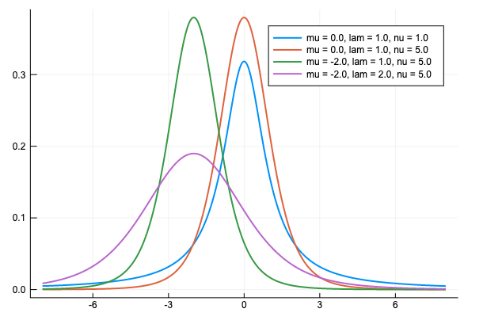

公式ドキュメントでは記述が見つけられなかったが、 LocationScale を使えば良いっぽい。
Distributions.jl/src/univariate/continuous/locationscale.jl https://github.com/JuliaStats/Distributions.jl/blob/master/src/univariate/continuous/locationscale.jl
例えば、PyMC3の StudentT
pm.StudentT('x', nu=nu, mu=mu, lam=lam)
に対応する分布をDistribution.jlで使いたいとき、Distribution.jlでの TDist のパラメトライズは nu だけで mu や lam は指定できないが、
LocationScale(mu, lam, TDist(nu))
とすればOK。PyMCの StudentT に出ている pdf と同じグラフを書いて確認しよう。
using Distributions
using Plots
using Printf
# StudentT分布のシフト
x = -8:0.01:8
mu = [0, 0, -2, -2]
lam = [1, 1, 1, 2]
nu = [1, 5, 5, 5]
plt = Plots.plot()
for i in 1:4
y = pdf.(LocationScale(mu[i], lam[i], TDist(nu[i])), x)
Plots.plot!(x, y, linewidth = 2,
label = @sprintf("mu = %.1f, lam = %.1f, nu = %.1f",
mu[i], lam[i], nu[i]))
end
plt

良さそうだ。